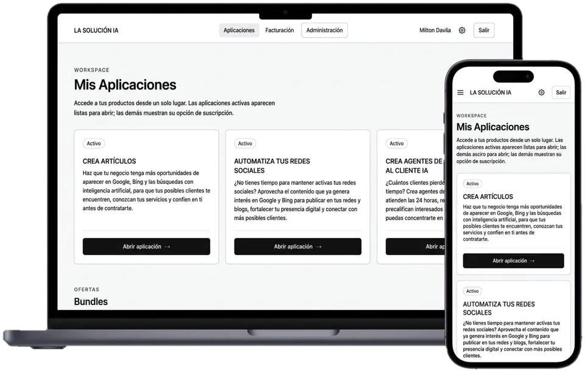

El HUB
Conéctate con mi HUB.
Te invito a entrar a mi HUB: un solo lugar con todas las aplicaciones que construí para darle productividad y posicionamiento a las empresas que atiendo.
- Crea artículos que te ayudan a aparecer en Google y en la IA.
- Automatiza tus redes sociales.
- Crea agentes de IA que atienden a tus clientes las 24 horas.

Dentro del HUB
Tres aplicaciones para que tu empresa se encuentre y atienda mejor.
Todo desde un solo lugar, sin tener que saber de tecnología.
Crea artículos
Haz que tu negocio tenga más oportunidades de aparecer en Google, Bing y las búsquedas con inteligencia artificial, para que tus posibles clientes te encuentren y confíen en ti antes de contratarte.
Automatiza tus redes sociales
Aprovecha el contenido que ya genera interés en Google y Bing para publicar en tus redes y blogs, y fortalecer tu presencia digital.
Crea agentes de IA para atender a tus clientes
Agentes de IA que atienden a tus clientes las 24 horas, para que ninguna oportunidad se pierda aunque tu equipo no esté disponible.
Preguntas frecuentes
Lo que casi todos preguntan antes de conectarse.
¿Qué es El HUB de Milton Dávila?
Es un solo lugar con todas las aplicaciones que Milton Dávila construyó para darle productividad y posicionamiento a las empresas: crear artículos que ayudan a aparecer en Google y en la IA, automatizar redes sociales y crear agentes de IA que atienden clientes las 24 horas.
¿Cómo me conecto al HUB?
Toca el botón «Conectarme al HUB» de esta página. Te lleva a hub.lasolucionweb.net, donde entras con tu cuenta y ves tus aplicaciones.
¿Necesito saber de tecnología para usar El HUB?
No. Las aplicaciones están hechas para que cualquier dueño de negocio las use. Si te surge una duda, puedes escribirle a Milton o agendar una sesión de 10 minutos sin costo.
¿Para qué tipo de negocios sirve El HUB?
Para empresas, profesionales y marcas personales que quieren aparecer cuando sus clientes los buscan en Google y en la IA, mantener activas sus redes sociales y atender a sus clientes sin perder oportunidades.
¿Quién creó El HUB?
Lo creó Milton Dávila, con base en Miami-Dade, Florida, que diseña, construye y despliega sistemas, automatizaciones e IA dentro de las empresas.